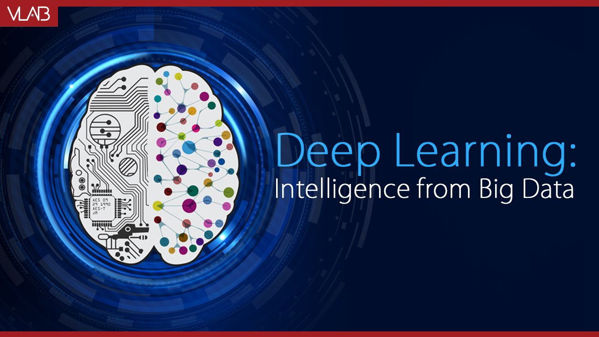
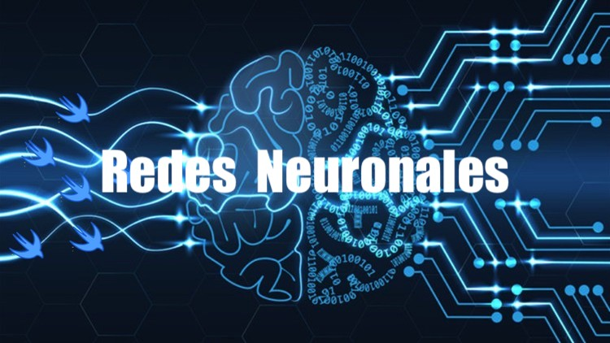

PRACTICA FINAL
HTML5
HTML5(HyperText Markup Language). Es la quinta revisión del lenguaje de marcado estándar que se emplea para la web. Es uno de los lenguajes de marcado más usados en todo el mundo y la razón es bastante obvia: gracias a HTML5 podemos crear la estructura de una página web. Texto, imágenes y material multimedia pueden mostrarse correctamente gracias a HTML5.
El lenguaje HTML5 se usa para definir la estructura básica de una página web. Sin embargo, una de sus más grandes adiciones en esta nueva versión es poder añadir audio y video sin necesidad de usar Flash u otro reproductor multimedia.
Entre las nuevas ventajas de usar HTML5, podemos encontrar: Una organización más ordenada de los codigos códigos, Compatibilidad con los navegadores (Chrome, Firefox, Safari y Opera), Almacenamiento mejorado y compatibilidad con los navegadores móviles.
Sin duda alguna, HTML5 cambia los paradigmas de desarrollo y diseño web que se tenían al introducir herramientas notables como etiquetas que permiten la publicación de archivos de audio y video con soportes de distintos codecs tags para que los usuarios dibujen contenidos en 2D cambios en los llenados de formularios; y una web semántica mucho mejor aprovechada.
Mas informacion:

CSS3
CSS3 es la última evolución del lenguaje de las Hojas de Estilo en Cascada (Cascading Style Sheets), y pretende ampliar la versión CSS2. Trae consigo muchas novedades altamente esperadas, como las esquinas redondeadas, sombras, gradientes, transiciones o animaciones, y nuevos layouts como multi-columnas, cajas flexibles o maquetas de diseño en cuadrícula (grid layouts).
Las partes experimentales son particulares para cada navegador y deberían ser evitadas en entornos de producción, o usadas con extrema precaución, ya que tanto la sintaxis como la semántica pueden cambiar en el futuro.
Ventajas:
Las ventajas principales en esta nueva versión son la inclusión de nuevas propiedades especialmente en cuanto al aspecto gráfico (recordemos que CSS también es utilizado para describir estilos para medios de audio) aunque se prevean mejores sustanciales en otros medios como el de sonido.
Permite lograr estilos y efectos visuales que antes sólo eran posibles por medio de tecnologías adicionales. Las novedades de CSS3 nos permiten ahorrarnos tiempo y trabajo al poder seguir varias técnicas (bordes redondeados, sombra en el texto, sombra en las cajas, etc) sin necesidad de usar un editor gráfico .
Inconvenientes:
El uso de las tablas nos permitía crear diseños complejos de forma mucho más sencilla que utilizando CSS, aunque CSS3 está intentando facilitar dicho trabajo.
Mas informacion:

JAVASCRIPT
JavaScript es el lenguaje interpretado orientado a objetos desarrollado por Netscape que se utiliza en millones de páginas web y aplicaciones de servidor en todo el mundo. Java Script de Netscape es un superconjunto del lenguaje de scripts estándar de la edición de ECMA-262 3 ECMAScript(ECMAScript) que presenta sólo leves diferencias respecto a la norma publicada.
Contrariamente a la falsa idea popular, Java Script no es "Java interpretativo". En pocas palabras, Java Script es un lenguaje de programación dinámico que soporta construcción de objetos basado en prototipos. La sintaxis básica es similar a Java y C++ con la intención de reducir el número de nuevos conceptos necesarios para aprender el lenguaje. Las construcciones del lenguaje, tales como sentencias if, y bucles for y while, y bloques switch y try ... catch funcionan de la misma manera que en estos lenguajes (o casi).
Java Script puede funcionar como lenguaje procedimental y como lenguaje orientado a objetos. Los objetos se crean programáticamente añadiendo métodos y propiedades a lo que de otra forma serían objetos vacíos en tiempo de ejecución, en contraposición a las definiciones sintácticas de clases comunes en los lenguajes compilados como C++ y Java. Una vez se ha construido un objeto, puede usarse como modelo (o prototipo) para crear objetos similares.
Las capacidades dinámicas de Java Script incluyen construcción de objetos en tiempo de ejecución, listas variables de parámetros, variables que pueden contener funciones, creación de scripts dinámicos (mediante eval), introspección de objetos (mediante for... in), y recuperación de código fuente (los programas de Java Script pueden de compilar el cuerpo de funciones a su código fuente original).
Mas informacion:
- Aplicación de Productos con Javascript Orientado a Objetos
- Cómo ser desarrollador JavaScript FullStack con MEAN, qué es y cómo funciona Node.js
- Qué aprender de Javascript
- Javascript, Desde Web hasta Hardware
Las PROGRESSIVE WEB APPS
Las Progressive Web Apps son experiencias que combinan lo mejor de la Web y lo mejor de las apps . Están disponibles para los usuarios a partir de la primera visita en una pestaña del navegador y no requieren instalación. A medida que el usuario compila progresivamente una relación con la app con el paso del tiempo, se hace más y más poderosa. Se carga rápidamente, incluso con redes débiles, envía notificaciones push relevantes, tiene un ícono en la pantalla principal y se carga como experiencia de pantalla completa y de primer nivel.
Una de las características fundamentales es que son progresivas, lo que significa que incrementan su funcionalidad según las características del dispositivo en el que se ejecutan. Respecto a la parte de web, hace referencia a que para su creación se utilizan lenguajes de programación como HTML , CSS o JavaScript. Realmente en esencia son páginas web, sin embargo, la parte final del nombre se refiere a que se comportan como aplicaciones nativas, adaptándose a los dispositivos en los que se visualizan.
Las Progressive Web Apps integran lo mejor de una web y lo mejor de una aplicación móvil nativa, adaptándose por completo al dispositivo desde el que se ejecutan, independientemente del sistema operativo que utilice (ya sea un Smartphone o una Tablet).
Además, las Progressive Web Apps presentan otras muchas ventajas:No requieren publicaci{on en los markets, no requieren instalación, no quieren actualizaciones, inciden en el posicionamiento SEO, etc.
Mas informacion:
- Qué son y cómo hacer una fácilmente
- Introducción a las Aplicaciones Web Progresivas
- Las aplicaciones PWA son el FUTURO
- Progressive Web Apps
INTELIGENCIA ARTIFICIAL
Inteligencia artificial (IA) es la combinación de algoritmos planteados con el propósito de crear máquinas que presenten las mismas capacidades que el ser humano. Una tecnología que todavía nos resulta lejana y misteriosa, pero que desde hace unos años está presente en nuestro día a día a todas horas.
La encontramos en la detección facial de los móviles, en los asistentes virtuales de voz como Siri de Apple, Alexa de Amazon o Cortana de Microsoft y está integrada en nuestros dispositivos cotidianos a través de bots (abreviatura de robots) o aplicaciones para móvil, con un fin y objetos en particular: hacer más fácil la vida de las personas.
Los avances en IA ya están impulsando el uso del big data debido a su habilidad para procesar ingentes cantidades de datos y proporcionar ventajas comunicacionales, comerciales y empresariales que la han llevado a posicionarse como la tecnología esencial de las próximas décadas. Transporte, educación, sanidad, cultura... ningún sector se resistirá a sus encantos.
Esta vertiginosa irrupción de la IA y de la robótica en nuestra sociedad ha llevado a los organismos internacionales a plantearse la necesidad de crear una normativa para regular su uso y empleo y evitar, de este modo, posibles problemáticas que puedan surgir en el futuro. Ambas tecnologías ya están cambiando el mundo y las cifras son la mejor muestra de ello, lo cierto es que lejos de convertirnos en obsoletos, la IA nos hará más eficientes y nos permitirá ejecutar acciones que nunca hubiéramos podido realizar debido a su complejidad.
Mas informacion:
- ¿Qué es la inteligencia artificial?
- INTELIGENCIA ARTIFICIAL
- Inteligencia Artificial: ¿Amiga o Enemiga?
- Inteligencia Artificial: ¿Quién toma las decisiones?

MACHINE LEARNING
Machine Learning conocido en español como aprendizaje automático o aprendizaje de máquina, nació como una idea ambiciosa de la IA en la década de los 60. Para ser más exactos, fue una subdisciplina de la IA, producto de las ciencias de la computación y las neurociencias .
Lo que esta rama pretendía estudiar era el reconocimiento de patrones (en los procesos de ingeniería, matemáticas, computación, etc.) y el aprendizaje por parte de las computadoras. En los albores de la IA, los investigadores estaban ávidos por encontrar una forma en la cual las computadoras pudieran aprender únicamente basándose en datos.
Mas informacion:
DEEP LEARNING
Deep Learning es un conjunto de algoritmos de clase aprendizaje automático (en inglés, machine learning) que intenta modelar abstracciones de alto nivel en datos usando arquitecturas compuestas de transformaciones no lineales múltiples.El aprendizaje profundo es parte de un conjunto más amplio de métodos de aprendizaje automático basados en asimilar representaciones de datos. Una observación (por ejemplo, una imagen) puede ser representada en muchas formas (por ejemplo, un vector de píxeles), pero algunas representaciones hacen más fácil aprender tareas de interés (por ejemplo, "¿es esta imagen una cara humana?") sobre la base de ejemplos, y la investigación en este área intenta definir qué representaciones son mejores y cómo crear modelos para reconocer estas representaciones.
Varias arquitecturas de aprendizaje profundo, como redes neuronales profundas, redes neuronales profundas convolucionales, y redes de creencia profundas, han sido aplicadas a campos como visión por computador, reconocimiento automático del habla, y reconocimiento de señales de audio y música, y han mostrado producir resultados de vanguardia en varias tareas.Todas estas maneras de definir el aprendizaje profundo tienen en común: múltiples capas de procesamiento no lineal; y el aprendizaje supervisado o no supervisado de representaciones de características en cada capa. Las capas forman una jerarquía de características desde un nivel de abstracción más bajo a uno más alto.Los algoritmos de aprendizaje profundo contrastan con los algoritmos de aprendizaje poco profundo por el número de transformaciones aplicadas a la señal mientras se propaga desde la capa de entrada a la capa de salida. Cada una de estas transformaciones incluye parámetros que se pueden entrenar como pesos y umbrales
Mas informacion:
RED NEURONAL
Las redes neuronales son un modelo computacional basado en un gran conjunto de unidades neuronales simples (neuronas artificiales), de forma aproximadamente análoga al comportamiento observado en los axones de las neuronas en los cerebros biológicos1. Cada unidad neuronal está conectada con muchas otras y los enlaces entre ellas pueden incrementar o inhibir el estado de activación de las neuronas adyacentes. Cada unidad neuronal, de forma individual, opera empleando funciones de suma. Puede existir una función limitadora o umbral en cada conexión y en la propia unidad, de tal modo que la señal debe sobrepasar un límite antes de propagarse a otra neurona. Estos sistemas aprenden y se forman a sí mismos, en lugar de ser programados de forma explícita, y sobresalen en áreas donde la detección de soluciones o características es difícil de expresar con la programación convencional.
Las redes neuronales suelen consistir en varias capas o un diseño de cubo, y la ruta de la señal atraviesa de adelante hacia atrás. Propagación hacia atrás es donde se utiliza la estimulación hacia adelante o en el "frente" para restablecer los pesos de las unidades neuronales y esto a veces se realiza en combinación con una formación en la que se conoce el resultado correcto. Las redes modernas son un poco más libres en el sentido de que fluye en términos de estimulación e inhibición con conexiones que interactúan de una manera mucho más caótica y compleja. Las redes neuronales dinámicas son lo más avanzadas en que se pueden formar dinámicamente nuevas conexiones e incluso nuevas unidades neuronales.
Mas informacion:

CRIPTOMONEDAS
Las criptomonedas o criptodivisas son monedas virtuales que utilizan un cifrado digitalcifrado digital para sus operaciones, y con las que se pueden realizar transacciones económicas sin necesidad de intermediarios. Estas monedas digitales utilizan la criptografía para crear economías más seguras, con una mayor privacidad y que no responden al control de ningún país o institución, ya que se encuentran totalmente descentralizadas.
¿Para qué sirven las monedas virtuales?
Las criptomonedas son un tipo de moneda digital, por lo que tienen el mismo uso que cualquier tipo de moneda física, pero con la diferencia de que no lo podemos tocar. Con las monedas virtuales se pueden realizar pagos entre personas y, además, ya son varias las empresas que admiten este tipo de moneda, aunque es verdad que todavía no está muy extendido. Algunas empresas como Destinia, Dell o Microsoft ya permiten que se hagan compras a través de sus páginas web con bitcoins, la moneda digital más extendida en el mundo.
Pero no solo es posible pagar con criptodivisas en páginas web, ya empiezan a surgir algunos establecimientos y tiendas físicas que te permiten pagan tus compras con este tipo de monedas. Esto aún es difícil de ver, pero quién sabe si en un futuro próximo pagaremos nuestras compras en los comercios con monedas digitales. Cabe destacar, que para poder realizar pagos con cualquier tipo de criptodivisas es necesario tener una cuenta que las contenga. Al igual que tenemos tarjetas de débito con euros, libras o dólares, también es posible tener tarjetas con Bitcoins.
Características
En los sistemas de criptomonedas, se garantiza la seguridad, integridad y equilibrio de sus estados de cuentas (contabilidad) por medio de un entramado de agentes (transferencia de archivo segmentada o transferencia de archivo multifuente) que se verifican (desconfían) mutuamente llamados mineros, que son, en su mayoría, público en general y protegen activamente la red (el entramado) al mantener una alta tasa de procesamiento de algoritmos, con la finalidad de tener la oportunidad de recibir una pequeña propina, que se reparte de manera aleatoria.5Romper la seguridad existente en una criptomoneda es matemáticamente posible, pero el costo para lograrlo sería inasumiblemente alto. Por ejemplo, un atacante que intentase quebrar el sistema de prueba de trabajo de Bitcoin necesitaría una potencia computacional mayor que el de todo el entramado (red-enjambre) de todos los mineros del sistema, y aun así, solo tendría una probabilidad de éxito del 50% (n.º de ronda de autenticación), en otras palabras, romper la seguridad de Bitcoin exigiría una capacidad superior a la de empresas tecnológicas del tamaño de Google.
Mas informacion:
- ¿Cómo funcionan las criptomonedas?
- Bitcoins - Lo bueno, lo malo
- 3 cosas que no te dicen sobre las criptomonedas
- Que es la Minería de criptomonedas
BLOCKCHAIN
Blockchain es una estructura de datos en la que la información contenida se agrupa en conjuntos (bloques) a los que se les añade metainformaciones relativas a otro bloque de la cadena anterior en una línea temporal, de manera que gracias a técnicas criptográficas, la información contenida en un bloque sólo puede ser repudiada o editada modificando todos los bloques posteriores. Esta propiedad permite su aplicación en entorno distribuido de manera que la estructura de datos blockchain puede ejercer de base de datos pública no relacional que contenga un histórico irrefutable de información.En la práctica ha permitido, gracias a la criptografía asimétrica y las funciones de resumen o hash, la implementación de un registro contable (ledger) distribuido que permite soportar y garantizar la seguridad de dinero digital.
Siguiendo un protocolo apropiado para todas las operaciones efectuadas sobre la blockchain, es posible alcanzar un consenso sobre la integridad de sus datos por parte de todos los participantes de la red sin necesidad de recurrir a una entidad de confianza que centralice la información. Por ello se considera una tecnología en la que la "verdad" (estado confiable del sistema) es construída, alcanzada y fortalecida por los propios miembros; incluso en un entorno en el que exista una minoría de nodos en la red con comportamiento malicioso (nodos sybil) dado que, en teoría, para comprometer los datos, un atacante requeriría de una mayor potencia de cómputo y presencia en la red que el resultante de la suma de todos los restantes nodos combinados.
Por las razones anteriores, la tecnología blockchain es especialmente adecuada para escenarios en los que se requiera almacenar de forma creciente datos ordenados en el tiempo, sin posibilidad de modificación ni revisión y cuya confianza pretenda ser distribuída en lugar de residir en una entidad certificadora. Este enfoque tiene diferentes aspectos:Almacenamiento de datos: se logra mediante la replicación de la información de la cadena de bloques Transmisión de datos: se logra mediante redes de pares.Confirmación de datos: se logra mediante un proceso de consenso entre los nodos participantes. El tipo de algoritmo más utilizado es el de prueba de trabajo en el que hay un proceso abierto competitivo y transparente de validación de las nuevas entradas llamada minería.
Aplicaciones
El concepto de cadena de bloques se usa en los siguientes campos:
En el campo de las criptomonedas la cadena de bloques se usa como notario público no modificable de todo el sistema de transacciones a fin de evitar el problema de que una moneda se pueda gastar dos veces. Por ejemplo es usada en Bitcoin, Ethereum, Dogecoin y Litecoin, aunque cada una con sus particularidades .
En el campo de las bases de datos de registro de nombres la cadena de bloques es usada para tener un sistema de notario de registro de nombres de tal forma que un nombre solo pueda ser utilizado para identificar el objeto que lo tiene efectivamente registrado. Es una alternativa al sistema tradicional de DNS. Por ejemplo es usada en Namecoin.
Uso como notario distribuido en distintos tipos de transacciones haciéndolas más seguras, baratas y rastreables. Por ejemplo se usa para sistemas de pago, transacciones bancarias (dificultando el lavado de dinero), envío de remesas, préstamos y en los sistemas de gestión de activos digitales puede ser usado con distintos propósitos.
Es utilizado como base de plataformas descentralizadas que permiten soportar la creación de acuerdos de contrato inteligente entre pares. El objetivo de estas plataformas es permitir a una red de pares administrar sus propios contratos inteligentes creados por los usuarios. Primero se escribe un contrato mediante un código y se sube a la cadena de bloques mediante una transacción. Una vez en la cadena de bloques el contrato tiene una dirección desde la cual se puede interactuar con él. Ejemplos de este tipo de plataformas son Ethereum y Ripple.
Mas informacion:
CYBERSEGURIDAD
Cyberseguridad o seguridad de tecnologías de la información, es el área relacionada con la informática y la telemática que se enfoca en la protección de la infraestructura computacional y todo lo relacionado con esta y, especialmente, la información contenida en una computadora o circulante a través de las redes de computadoras.1 Para ello existen una serie de estándares, protocolos, métodos, reglas, herramientas y leyes concebidas para minimizar los posibles riesgos a la infraestructura o a la información. La ciberseguridad comprende software (bases de datos, metadatos, archivos), hardware, redes de computadoras y todo lo que la organización valore y signifique un riesgo si esta información confidencial llega a manos de otras personas, convirtiéndose, por ejemplo, en información privilegiada.
La definición de seguridad de la información no debe ser confundida con la de «seguridad informática», ya que esta última solo se encarga de la seguridad en el medio informático, pero la información puede encontrarse en diferentes medios o formas, y no solo en medios informáticos.La seguridad informática es la disciplina que se encarga de diseñar las normas, procedimientos, métodos y técnicas destinados a conseguir un sistema de información seguro y confiable.Puesto simple, la seguridad en un ambiente de red es la habilidad de identificar y eliminar vulnerabilidades. Una definición general de seguridad debe también poner atención a la necesidad de salvaguardar la ventaja organizacional, incluyendo información y equipos físicos, tales como los mismos computadores. Nadie a cargo de seguridad debe determinar quién y cuándo puede tomar acciones apropiadas sobre un ítem en específico. Cuando se trata de la seguridad de una compañía, lo que es apropiado varía de organización en organización. Independientemente, cualquier compañía con una red debe tener una política de seguridad que se dirija a la conveniencia y la coordinación.
La seguridad informática debe establecer normas que minimicen los riesgos a la información o infraestructura informática. Estas normas incluyen horarios de funcionamiento, restricciones a ciertos lugares, autorizaciones, denegaciones, perfiles de usuario, planes de emergencia, protocolos y todo lo necesario que permita un buen nivel de seguridad informática minimizando el impacto en el desempeño de los trabajadores y de la organización en general y como principal contribuyente al uso de programas realizados por programadores.
No sólo las amenazas que surgen de la programación y el funcionamiento de un dispositivo de almacenamiento, transmisión o proceso deben ser consideradas, también hay otras circunstancias no informáticas que deben ser tomadas en cuenta. Muchas son a menudo imprevisibles o inevitables, de modo que las únicas protecciones posibles son las redundancias y la descentralización, por ejemplo mediante determinadas estructuras de redes en el caso de las comunicaciones o servidores en clústerclúster para la disponibilidad.
Mas informacion:
- Ciberseguridad
- Introducción a la ciberseguridad
- Ciberseguridad para la empresa
- Ciberseguridad vs Ciberterrorismo

REALIDAD VIRTUAL
Realidad virtual es un entorno de escenas u objetos de apariencia real. La acepción más común refiere a un entorno generado mediante tecnología informática, que crea en el usuario la sensación de estar inmerso en él. Dicho entorno es contemplado por el usuario a través de un dispositivo conocido como gafas o casco de realidad virtual. Este puede ir acompañado de otros dispositivos, como guantes o trajes especiales, que permiten una mayor interacción con el entorno así como la percepción de diferentes estímulos que intensifican la sensación de realidad.
El término realidad virtual (RV) se popularizó a finales de la década de 1980 por Jaron Lanier, uno de los pioneros del campo. Al mismo tiempo, también apareció el término Realidad Artificial (RA). 1 En 1982 el término ciberespacio fue acuñado en una novela por W. Gibson ("Burning Chrome"). La Enciclopedia Británica describe la realidad virtual como "el uso del modelado y la simulación por computadora que permite a una persona interactuar con un entorno sensorial tridimensional (3D) artificial u otro entorno sensorial". Además, establece que "las aplicaciones de realidad virtual sumergen al usuario en un entorno generado por computadora que simula la realidad mediante el uso de dispositivos interactivos, que envían y reciben información y se usan como gafas, auriculares, guantes o trajes para el cuerpo". 3 Por ejemplo, un usuario que usa una pantalla montada en la cabeza con un sistema de proyección estereoscópica puede ver imágenes animadas de un entorno virtual. Un término importante es presencia o telepresencia, que se puede describir como una ilusión de "estar allí".
Componentes principales
La realidad virtual comprende dos componentes principales: el entorno del usuario y el entorno virtual. Mientras el usuario interactúa con el sistema de realidad virtual, los dos entornos se comunican e intercambian información a través de una barrera llamada interfaz. La interfaz puede considerarse como un traductor entre el usuario y el sistema de realidad virtual. Cuando el usuario aplica acciones de entrada (por ejemplo, movimiento, generación de fuerza, voz, etc.), la interfaz traduce estas acciones en señales digitales, que pueden ser procesadas e interpretadas por el sistema. Por otro lado, las reacciones calculadas del sistema también se traducen por la interfaz en cantidades físicas, que el usuario puede percibir mediante el uso de diferentes tecnologías de pantalla y actuador (por ejemplo, imágenes, sonidos, olores, etc.). Finalmente, el usuario interpreta esta información y reacciona al sistema en consecuencia.
Importancia de la multimodalidad
En las aplicaciones de realidad virtual, el intercambio de diferentes cantidades físicas entre el usuario y el entorno virtual se produce a través de diferentes canales o modalidades. Tales modalidades pueden ser sonido, visión o tacto. La comunicación con múltiples modalidades se llama interacción multimodal. La interacción multimodal permite que varios tipos de modalidades se intercambien simultáneamente entre el usuario y el entorno virtual. El objetivo de la aplicación de la interacción multimodal es proporcionar una imagen completa y realista de la situación, para proporcionar información redundante, por ejemplo, por razones de seguridad, y para aumentar la calidad de la presencia.
Mas informacion:
- ¿Qué es Realidad virtual?
- Realidad Virtual
- 8 Revolucionarios Accesorios de REALIDAD VIRTUAL
- La Mejor App de Realidad Virtual Android y iOS
REALIDAD AUMENTADA
La Realidad aumentada es el término que se usa para definir la visión de un entorno físico del mundo real, a través de un dispositivo tecnológico. Este dispositivo o conjunto de dispositivos, añaden información virtual a la información física ya existente; es decir, una parte sintética virtual a la real. De esta manera; los elementos físicos tangibles se combinan con elementos virtuales, creando así una realidad aumentada en tiempo real.
La realidad aumentada es diferente de la realidad virtual: sobre la realidad material del mundo físico monta una realidad visual generada por la tecnología, en la que el usuario percibe una mezcla de las dos realidades; en cambio, en la realidad virtual el usuario se aísla de la realidad material del mundo físico para sumergirse en un escenario o entorno totalmente virtual.Con la ayuda de la tecnología; por ejemplo, añadiendo la visión por un computador y reconocimiento de objetos, la información sobre el mundo real alrededor del usuario, se convierte en interactiva y digital. La información artificial sobre el medio ambiente y los objetos puede ser almacenada y recuperada como una capa de información en la parte superior de la visión del mundo real.
La realidad aumentada de investigación explora la aplicación de imágenes generadas por ordenador en tiempo real a secuencias de vídeo como una forma de ampliar el mundo real. La investigación incluye a este respecto el uso de pantallas colocadas en la cabeza, un monitor virtual colocado en la retina para mejorar la visualización y la construcción de ambientes controlados a partir de sensores y actuadores.Recientemente, el término realidad aumentada se ha difundido por el creciente interés del público en general siendo utilizada en distintos campos, como educación, ocio, marketing o arquitectura, entre otros.
Los dispositivos de realidad aumentada normalmente constan de unos cascos o gafas y un sistema de visualización para mostrar al usuario la información virtual que se añade a la real. El headset lleva incorporado sistemas de GPS, necesarios para poder localizar con precisión la situación del usuario.Los dos principales sistemas de visualización empleados son la pantalla óptica transparente y la pantalla de mezcla de imágenes. Tanto uno como el otro usan imágenes virtuales que se muestran al usuario mezcladas con la realidad o bien proyectadas directamente en la pantalla.Los Sistemas de realidad aumentada modernos utilizan una o más de las siguientes tecnologías: cámaras digitales, sensores ópticos, acelerómetros, GPS, giroscopios, brújulas de estado sólido, RFID, etc. El hardware de procesamiento de sonido podría ser incluido en los sistemas de realidad aumentada. Los sistemas de cámaras basadas en realidad aumentada requieren de una unidad CPU potente y gran cantidad de memoria RAM para procesar imágenes de dichas cámaras. La combinación de todos estos elementos se da a menudo en los smartphones modernos, que los convierten en una posible plataforma de realidad aumentada.
Mas informacion:
- ¿Qué es realidad aumentada?
- Realidad Aumentada: ¿Cómo funciona? y Usos
- Top 5: Los mejores usos para la realidad aumentada
- Apps de REALIDAD AUMENTADA
REALIDAD MIXTA
Realidad Mixta también llamada a veces realidad híbrida, es la combinación de realidad virtual y realidad aumentada. Esta combinación permite crear nuevos espacios en los que interactúan tanto objetos y/o personas reales como virtuales. Es decir, se puede considerar como una mezcla entre la realidad, realidad aumentada, virtualidad aumentada y realidad virtual.El término realidad mixta no debe confundirse con el de realidad aumentada o RA. La realidad aumentada genera los estímulos a tiempo real para la interacción del usuario, los cuales se superponen sobre el entorno físico de este, mientras que la realidad mixta no sólo permite la interacción del usuario con el entorno virtual sino que también permite que objetos físicos del entorno inmediato del usuario sirvan como elementos de interacción con el entorno virtual.
Aplicaciones
La realidad mixta se está implementando en un gran número de aplicaciones, se está empezando a manifestar en la industria del entretenimiento y el arte, así como también empieza a diversificarse en el mundo de la educación y los negocios .
Básicamente, los sistemas que se utiliza en realidad mixta son:
IPCM (sigla del inglés, Interactive Product Content Management): que consiste en poder presentar productos interactivos al cliente, es decir, crear un nuevo catálogo con réplicas en 3D proyectadas en la realidad de un producto que antes sólo se podía consultar mediante imágenes o vídeos.
SBL (sigla del inglés, Simulation Based Learning): permite, mediante simulaciones de realidad virtual, incluir a los estudiantes directamente en un entorno de aprendizaje, todo proyectando situaciones o tareas creadas virtualmente en el entorno real del usuario.
Otras aplicaciones de realidad mixta son las siguientes
Entrenamiento militar
El ambiente de combate es simulado y representado a través de datos complejos por HMD.Trabajo remoto
La realidad mixta permite que una fuerza de trabajo global de equipos remotos trabaje conjuntamente y aborde los retos empresariales de una organización. No importa dónde se encuentre físicamente, un empleado puede ingresar a un entorno virtual colaborativo y dinámico. Las barreras de idioma se volverán irrelevantes ya que las aplicaciones de AR pueden traducir con exactitud en tiempo real. Esto representa una mano de obra más flexible. Si bien, muchos compañías siguen utilizando modelos inflexibles de tiempo de trabajo fijo y ubicación, hay evidencia de que los empleados son más productivos si tienen mayor autonomía sobre dónde, cuándo y cómo trabajan. Los empleados también se benefician de la autonomía en cómo trabajan porque cada uno procesa la información diferentemente. El modelo VAK clásico para los estilos de aprendizaje diferencia a los alumnos visuales, auditivos y cenestésicos.Salud
Las simulaciones quirúrgicas y de ultrasonido se utilizan como un ejercicio de entrenamiento para los profesionales de la salud. Maniquíes médicos cobran vida para generar un número ilimitado de escenarios de entrenamiento e instruir empatía a los profesionales de la salud.Mas informacion:
- ¿Qué es Realidad Mixta?
- Windows Mixed Reality - Realidad Mixta
- Realidad Mixta
- Llego la Realidad Mixta
INTERNET DE LAS COSAS
Internet de las cosas es un concepto que se refiere a la interconexión digital de objetos cotidianos con Internet.Alternativamente, Internet de las cosas es la conexión de Internet con más cosas u objetos que con personas.También, se suele conocer como Internet de todas las cosas o Internet en las cosas. Si los objetos de la vida cotidiana tuvieran incorporadas etiquetas de radio, podrían ser identificados y gestionados por otros equipos, de la misma manera que si lo fuesen por seres humanos.El concepto de Internet de las cosas fue propuesto por Kevin Ashton en el Auto-ID Center del MIT en 1999, donde se realizaban investigaciones en el campo de la identificación por radiofrecuencia en red (RFID) y tecnologías de sensores.
El Internet de las cosas debería codificar de 50 a 100 000 millones de objetos y seguir el movimiento de estos. Se calcula que todo ser humano está rodeado, al menos, por un total de aproximadamente 1000 a 5000 objetos. Según la empresa Gartner, en el 202013 habrá en el mundo aproximadamente 26 mil millones de dispositivos con un sistema de conexión al Internet de las cosas. Abi Research, por otro lado, asegura que para el mismo año existirán 30 mil millones de dispositivos inalámbricos conectados a Internet. Con la próxima generación de aplicaciones de Internet (protocolo IPv6) se podrían identificar todos los objetos, algo que no se podía hacer con IPv4. Este sistema sería capaz de identificar instantáneamente por medio de un código a cualquier tipo de objeto.
La empresa estadounidense Cisco, que está detrás de la iniciativa del Internet de las cosas, ha creado un “contador de conexiones” dinámico que le permite estimar el número de “cosas” conectadas desde julio del 2013 hasta el 2020. El concepto de que los dispositivos se conectan a la red a través de señales de radio de baja potencia es el campo de estudio más activo del Internet de las cosas. Este hecho explica por qué las señales de este tipo no necesitan Wi-Fi ni Bluetooth. Sin embargo, se están investigando distintas alternativas que necesitan menos energía y que resultan más económicas, con el nombre Cheap Networks.
A la fecha de este artículo, el término Internet de las cosas se usa con una denotación de conexión avanzada de dispositivos, sistemas y servicios que va más allá del tradicional M2M (máquina a máquina) y abarca una amplia variedad de protocolos, dominios y aplicaciones.El servicio touchatag de Alcatel-Lucent y el gadget Violeta Mirror pueden proporcionar un enfoque de orientación pragmática a los consumidores del Internet de las cosas, por el que cualquiera puede enlazar elementos del mundo real al mundo en línea utilizando las etiquetas RFID (y códigos QR, en el caso de touchatag).
Mas informacion:
- Internet de las cosas (IoT) | ¿En qué consiste y cómo funciona?
- El Internet de las cosas
- Curso Internet de las Cosas - Introducción
- Internet de las Cosas - IOT

MECATRÓNICA
La Ingeniería mecatrónica es una disciplina que sirve para diseñar y desarrollar productos que involucren sistemas de control para el diseño de productos o procesos inteligentes, lo cual busca crear maquinaria más compleja para facilitar las actividades del ser humano a través de procesos electrónicos en la industria mecánica, principalmente. Esta disciplina une la ingeniería mecánica, ingeniería electrónica, ingeniería de control e ingeniería informática. Debido a que combina varias ingenierías en una sola, su punto fuerte es la versatilidad.
La mecatrónica nace para suplir tres urgentes necesidades latentes; la primera, encaminada a automatizar la maquinaría y así lograr procesos productivos ágiles y confiables; la segunda crear productos inteligentes, que respondan a las necesidades del mundo moderno; y la tercera, por cierto muy importante, armonizar entre los componentes mecánicos y electrónicos de las máquinas, ya que en muchas ocasiones, era casi imposible lograr que tanto mecánica como electrónica manejaran los mismos términos y procesos para hacer o reparar equipos.
Un ingeniero en mecatrónica es un profesional con amplio conocimiento teórico, práctico y multidisciplinario capaz de integrar y desarrollar sistemas automatizados y/o autónomos que involucren tecnologías de varios campos de la ingeniería. Este especialista entiende sobre el funcionamiento de los componentes mecánicos, eléctricos, electrónicos y computacionales de los procesos industriales, y tiene como referencia el desarrollo sostenible.
Uso útil
Entendiendo que la mecatrónica abarca disciplinas muy amplias y complejas puede decirse que tiene muchos campos de aplicación. De hecho, la mecatrónica pretende ser esa disciplina o Ingeniería en la que los productos se fabriquen teniendo en cuenta todas las ingenierías y no estando separadas como tradicionalmente. Su punto fuerte es la versatilidad para crear mejores productos, procesos o sistemas. La Mecatrónica no es un concepto nuevo o una ingeniera nueva, sino, la síntesis de ciertas áreas de ingeniería.
Su principal objetivo es cubrir ciertas necesidades como:
Automatizar la maquinaria, así se consigue que sea ágil, productiva y fiable.
Creación de productos inteligentes: que sobre todo responden a las necesidades del ser humano.
Que haya armonía entre componentes mecánicos y electrónicos (hasta ahora la mecánica y la electrónica no manejaban los mismo términos lo que dificultaba los procesos de fabricación o reparación de diferentes equipos).
Mas informacion:
- ¿Qué es la ingeniería mecatrónica?
- Introducción a la Mecatrónica
- La diferencia entre Robótica y Mecatrónica
- CURSO DE MECATRÓNICA

3D PRINTING
3D printing o la impresión 3D es una tecnología innovadora que permite crear objetos físicos desde un modelo digital. La impresión 3D ( también conocida como manufactura por adición, es un proceso por el cual se crean objetos físicos colocando un material por capas en base a un modelo digital. Todos los procesos de impresión 3D requieren que el software, el hardware y los materiales trabajen en conjunto.Sus inicios fueron en los años 80’s bajo el nombre “prototipado rápido” porque ese era el propósito de la tecnología: realizar prototipos de forma rápida y económica. Mucho ha cambiado desde entonces, y hoy las impresoras 3D ofrecen resultados maravillosos permitiendo crear todo lo que se pueda imaginar.
La tecnología de impresión 3D puede utilizarse para crear todo tipo de cosas, desde prototipos y piezas simples hasta productos finales altamente técnicos, como piezas para aeronaves, edificios ecológicos, implantes médicos que pueden salvar vidas e incluso órganos artificiales que se producen con capas de células humanas.
Algunas ventajas de la impresión en 3D son: Permite realizar prototipos de productos con facilidad, reducción de costes, personalización, etc. Mientras que en las desventajas se encuentran una disminución de puestos de trabajos, la elaboración propia de los productos, y la disminución de maquinaria, vulneración de los derechos de autor, entre otras.
El término "impresión 3D" originalmente se refería a un proceso que deposita un material aglutinante sobre un lecho de polvo con cabezales de impresora de inyección de tinta capa por capa. Más recientemente, el término se está utilizando en la lengua vernácula popular para abarcar una variedad más amplia de técnicas de fabricación aditiva. Los Estados Unidos y las normas técnicas mundiales utilizan el término oficial de fabricación aditiva en este sentido más amplio.
Mas informacion:
- Cómo Funciona una Impresora 3D
- 3D printing
- AWESOME 3D Printed Rick Sanchez - Creality CR-10 Print!
- mprimir en 3D como un profesional
TECNOLOGÍA G5
Tecnología G5, la red inalámbrica de la próxima (5ta) generación abordará la evolución más allá del internet móvil, y alcanzará al Internet de las Cosas masivo hacia 2020. La evolución más notable en comparación con las redes 4G y 4.5G (LTE avanzado) actuales es que, aparte del aumento en la velocidad de los datos, los nuevos casos de uso del Internet de las Cosas y de la comunicación requerirán nuevos tipos de desempeño mejorado; como la “latencia baja” , que brinda una interacción en tiempo real a los servicios que utilizan la nube, lo que resulta clave, por ejemplo, para los vehículos autónomos. Además, el bajo consumo de energía permitirá que los objetos conectados funcionen durante meses o años sin la necesidad de la intervención humana.
A diferencia de los servicios actuales del Internet de las Cosas que sacrifican rendimiento para sacar el máximo provecho a las tecnologías inalámbricas existentes (3G, 4G, WiFi, Bluetooth, Zigbee, etc.), las redes 5G estarán diseñadas para alcanzar el nivel de rendimiento que necesita el Internet de las Cosas masivo. Esto hará posible que se perciba un mundo completamente ubicuo y conectado.
La tecnología 5G está caracterizada por 8 especificaciones:
• Una tasa de datos de hasta 10Gbps - > de 10 a 100 veces mejor que las redes 4G y 4.5G
• Latencia de 1 milisegundo
• Una banda ancha 1000 veces más rápida por unidad de área
• Hasta 100 dispositivos más conectados por unidad de área (en comparación con las redes 4G LTE)
• Disponibilidad del 99.999%
• Cobertura del 100%
• Reducción del 90% en el consumo de energía de la red
• Hasta 10 diez años de duración de la batería en los dispositivos IoT (Internet de las Cosas) de baja potencia.
Más allá de mejorar la velocidad, se espera que las redes 5G liberen un ecosistema masivo de IoT (Internet de las cosas), en el que las redes puedan cubrir las necesidades de comunicación de miles de millones de dispositivos conectados, con la combinación adecuada entre velocidad, latencia y costo. El siguiente documento de preguntas y respuestas le proporcionará una interesante introducción a la tecnología 5G: cómo difiere de la tecnología 4G LTE actual, cuáles son los nuevos casos de uso para IoT y de qué manera los operadores de redes móviles se pueden beneficiar.
Mas informacion:
- Todo lo que debes saber acerca de la tecnología 5G
- Conozca la increíble súper internet 5G
- ¿Qué es el 5G y por qué es necesario?
- Telefonía Móvil 5G. La Quinta Generación
Resumen de lo aprendido
HTML5 es un programa que nos permite procesar y escribir código de una forma más simple y lógica con las nuevas herramientas y etiquetas (que se pueden utilizar de distintas formas) que este nos proporciona en su nueva actualización, así pudiendo realizar páginas WEB de forma más sencilla, organizada y con una mejor compatibilidad, a diferencia de CSS3 que nos trae una gran variedad de formas, estilos gráficos y efectos visuales que nos permite mejorar los diseños puestos en nuestras páginas WEB, así facilitando un buen manejo visual, acompañado de la estructura del lenguaje de programación.
JavaScript es más bien una forma de hacer más útiles las aplicaciones que encontramos y que aplicamos a nuestras páginas Web para hacerlas más funcionales y fáciles de utilizar.
¿Qué podríamos decir de las Progressive Apps? Son las aplicaciones progresivas que van aumentando su funcionalidad a través del tiempo, es decir, van actualizando y teniendo más funcionalidad. Teniendo un estrecho lazo con JavaScript, HTML y CSS. Se comportan como aplicaciones nativas y adoptan un comportamiento según sea el medio en que la visualicemos o utilicemos.
Hoy en día la Inteligencia Artificial es un hecho. Abarcando una gran parte de crecimiento tecnológico y ampliando sus diferentes ramas (Machine Learning, Deep Learning y Red Neuronal) con la habilidad para procesar cantidades de datos y proporcionar ventajas comunicacionales, comerciales y empresariales haciendo de las máquinas ‘inteligentes’ y capaz de resolver problemas ‘humanos’ por sí mismas.
Mientras que la Realidad virtual, aumentada y mixta mezclan el entorno del usuario y el entorno virtual. Mientras el usuario interactúa con el sistema de realidad virtual, los dos entornos se comunican e intercambian información mezclando la realidad con la fantasía, haciendo de los videojuegos una experiencia más memorable. Y no tan solo de los videojuegos, podríamos decir que la realidad virtual trata de mostrarnos nuevas experiencia tecnológicas, artísticas y de entretenimiento.
Todo esto lo podemos lograr a través del IOT (Internet De Las Cosas), la cual se encarga de darle conocimientos o inteligencia a objetos cotidianos a través de Internet, abarcando una amplia variedad de protocolos, dominios y aplicaciones.
En cuanto a las Criptomonedas, que son monedas digitales, el cual ha tomado auge en los últimos tiempos por la llegada de Bitcoin. Estas monedas virtuales ya han sido aceptadas en varias empresas, pero esta aún no han sido extendidas por no considerarse un método muy seguro de pago. Aunque ya existe Blockchain, que rastrea, sistemas de pago, transacciones bancarias (dificultando el lavado de dinero), envío de remesas, préstamos y haciendo de las transacciones más seguras y baratas. Mientras que la Ciberseguridad se enfoca en la protección de la infraestructura computacional y todo lo relacionado con esta y, especialmente, en las informaciones contenidas en una computadora o circulante a través de las redes de computadoras. ya que los datos son los activos más importantes.
La Mecatrónica por otro lado es una disciplina la cual fue desarrollada con el fin de crear ciertas maquinarias en las áreas industriales las cuales facilitan las actividades del ser humana esto abarca una gran ámbito de las ingenierías como son ingeniería eléctrica, mecánica y ingeniería informática haciendo una combinación de todas estas áreas para lograr los objetivos esperados.
3D printing es uno de los avances más significativos en los últimos tiempos esta permite la creación o la impresión de objetos tridimensionales con fin de recrearlos de una manera atractiva, esta técnica es utilizada en muchas áreas hoy día en cine, salud, educación, etc.. ya que su utilidad ha sido de gran ayuda en estas áreas.
La tecnología 5g este tema a dado mucho de que hablar en los ultimos tiempos en el área de la telefonía ya que se presume de un gran avances en las redes de telefonía a nivel mundial gracias a los avances que promete esta red con su implementación en el mercado industrial.